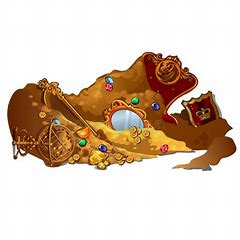

Em um belo dia de domingo, constatou-se numa floresta um grande tesuro é a tua função buscá-lo.
Ao andar pela floresta você se depara com um grande monstro em frente a uma caverna.
Você passa pelo monstro e o que te resta é achar o tesouro.
No caminho das águas você encontra o tesouro, mas não há como mais você voltar pelo caminhou que entrou

Você consegue sair da caverna pois o rio te guia a uma praia. E assim você fica milionário com o tesouro ali achado.
No caminho dos minérios você encontra muito ouro, prata e até diamante.
.
Você consegue explorar muitos minérios, mas não consegue prosseguir com a aventura, portanto você fica rico com os minérios que achou.